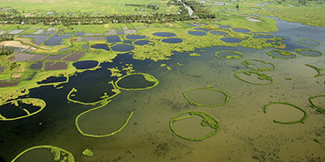
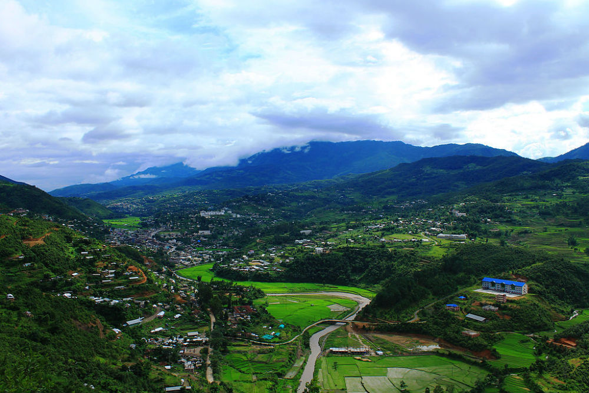
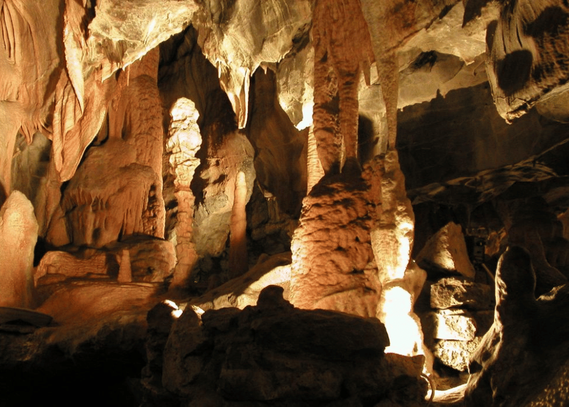

Welcome to Manipur
Manipur, often referred to as the "Jewel of India," is a land of tranquil lakes, lush valleys, and vibrant cultural heritage. Nestled in the hills of Northeast India, it is known for its classical dance, warm hospitality, and natural wonders like the floating islands of Loktak Lake.

Loktak Lake
India’s only floating lake with unique circular phumdis formations.

Keibul Lamjao National Park
World’s only floating park and home to Sangai deer.
Kangla Fort
Historic seat of Manipur’s rulers in Imphal city.

Ima Keithel (Mother's Market)
Asia’s largest market run entirely by women vendors.

Senapati Hills
Hilly paradise with nature trails and tribal culture.

Tharon Cave
Limestone caves rich with legends and ancient carvings.